Living Room
- The lighting in a living room should allow people to see each other easily
- The lighting should be flattering and not revealing.
- The most useful general purpose fitting for the living room is one with a large cylindrical shade and open top and bottom. This will give an up and down distribution which will give both direct light on ones book or sewing and diffused indirect light reflected off ceiling and upper walls.
- The most satisfying form of lighting in a living room will be one that is flexible, giving a good level of illumination without glare at the main sitting positions, with an interesting and varied distribution of brightness through the main surfaces in the room, but avoiding exaggerated contrasts or contrived effects which can soon become tiresome.
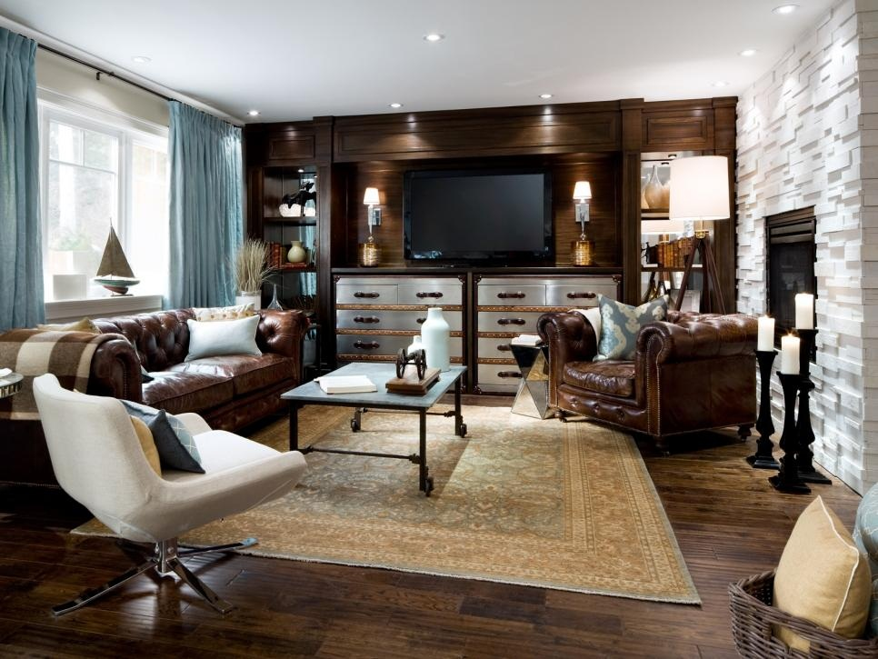
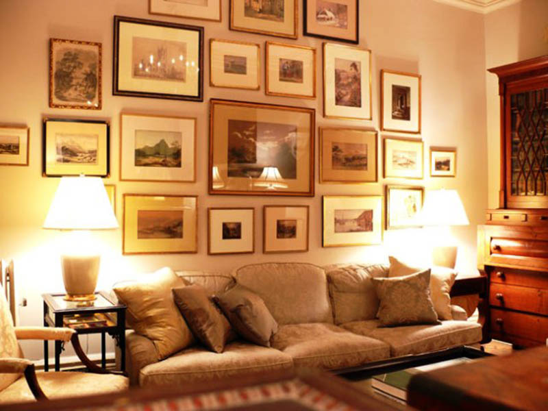
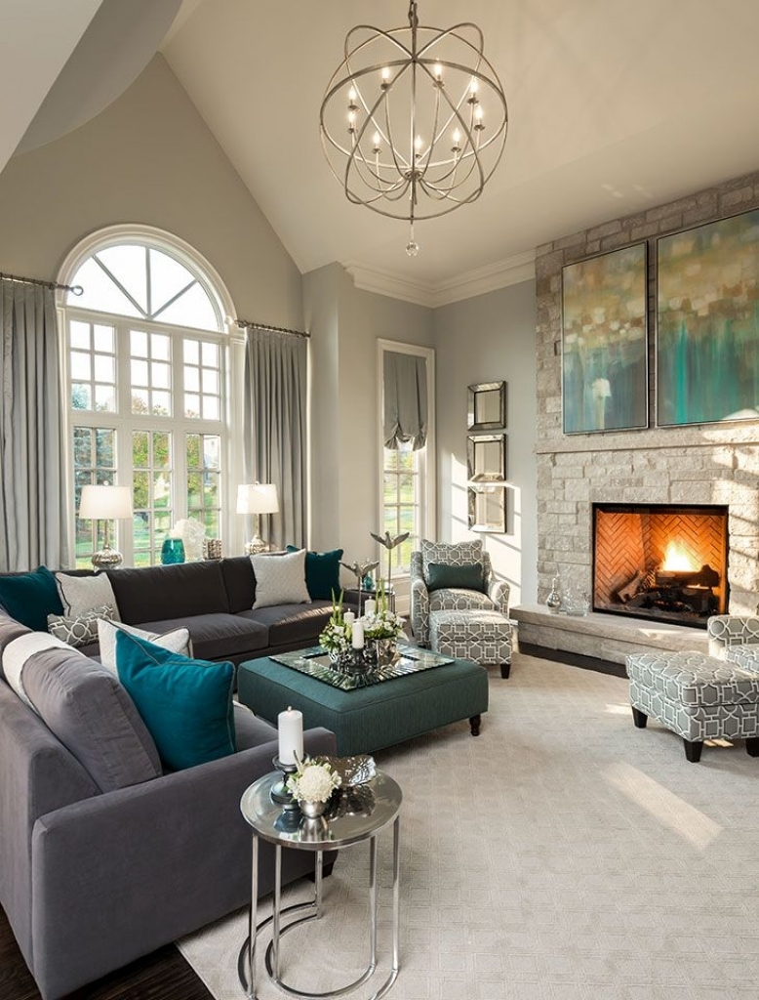
Dining Room
- Lighting should be provided in such that it permits everyone to see well
- Lighting should be focused on the food to make the food itself look attractive.
- To put the setting of the meal-table, linen, cutlery, glass-in good light.
- To be able to see the company around the table-family and friends-easily and in flattering light.
- Lighting faces is better done with the light reflected from the table, and with the general background lighting which will also light the surroundings to a level against which people may be seen easily.
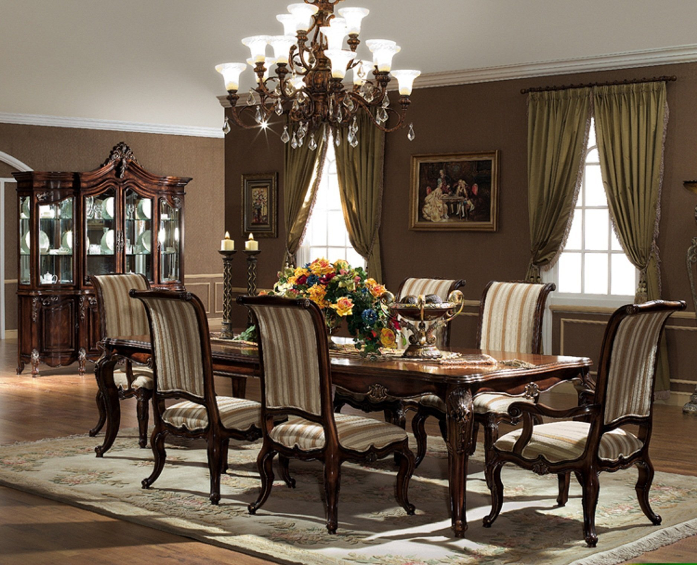
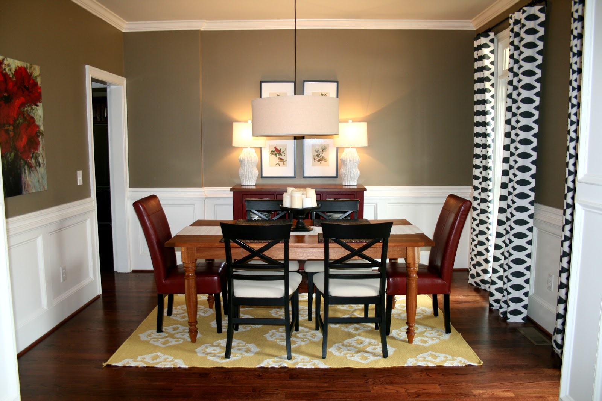
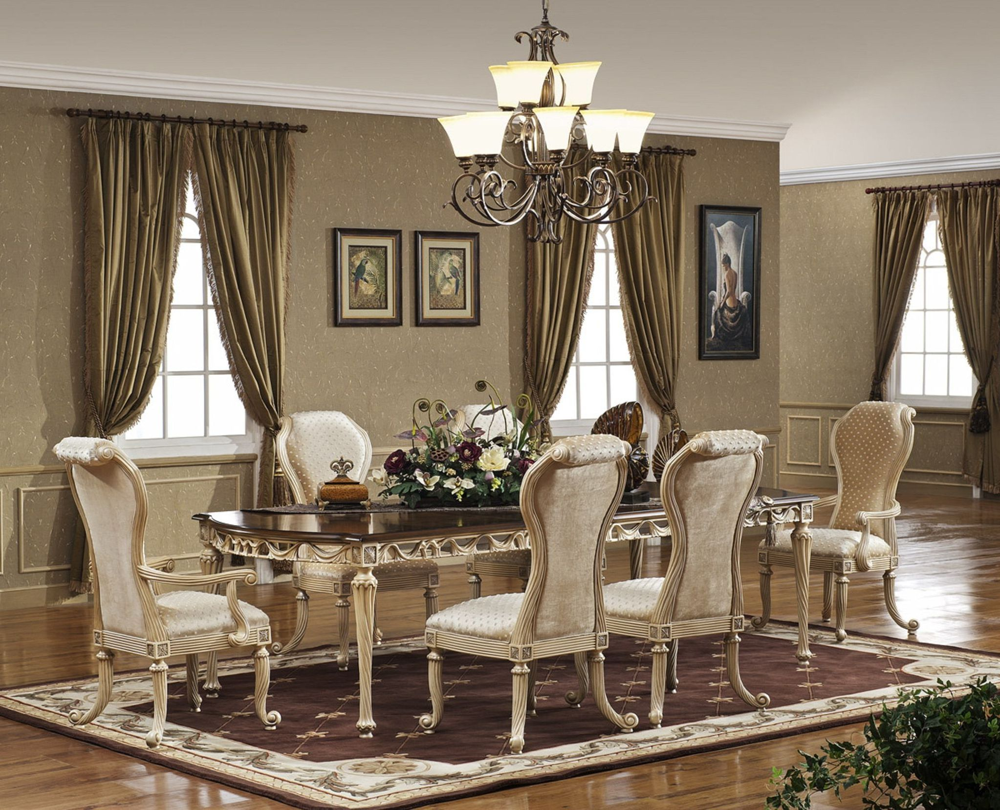
Kitchen
- Most of the visual work is carried out in this space.
- Lighting shall be provided such that the cook should be able to judge subtle differences in color and textures of the food as it is cooking, often through the additional hazard of a steam or at the bottom of deep pans.
- More than one artificial lighting is required in the kitchen.
- The whole worktop should be well lit and a number of fittings(as many as three or four 100 watts fittings may be required) should be arranged so that the worker doesn’t have to work in her own light at any point.
- The fitting may be recessed in the ceiling, mounted behind the pelmets or cooker hoods, fixed above or below wall cupboards.
- They should be designed for easy cleaning and maintenance.
- Mostly tungsten filament lamps are still used in kitchen.
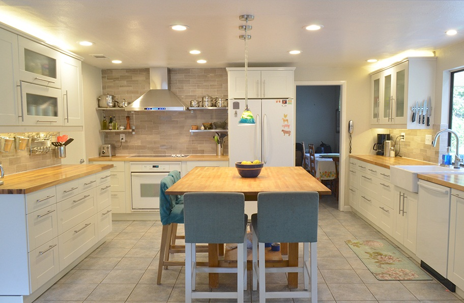
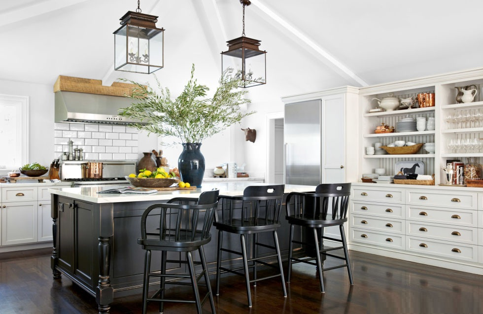
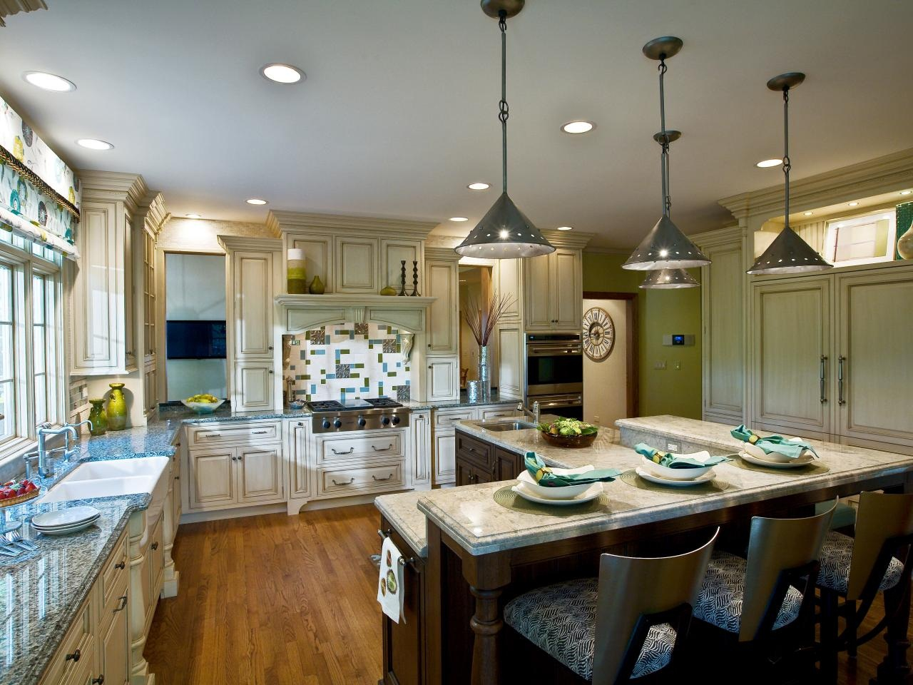
Bedroom
- The bedrooms being the relaxation space one should provide a light that instills a sense of peace
- A table lamp should be provided on the bedside.
- The dressing mirror should be well lit in such a way that it doesn’t cause a reflection to the persons eyes. A light source on either side wall give a better viewing position.
- Wall sockets outlets in the right place will give greater flexibility in the choice and final position of fittings.
- A desk light may be wanted if the room is to be used for study or hobbies.
- This range of local lighting should provided sufficient general lighting in most bed rooms, provide some switch are from the door.
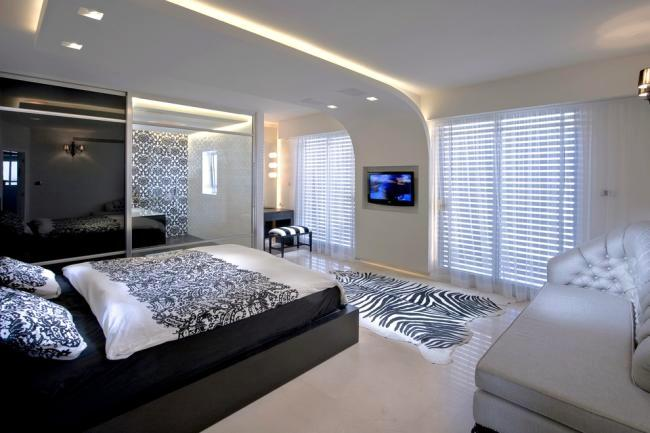
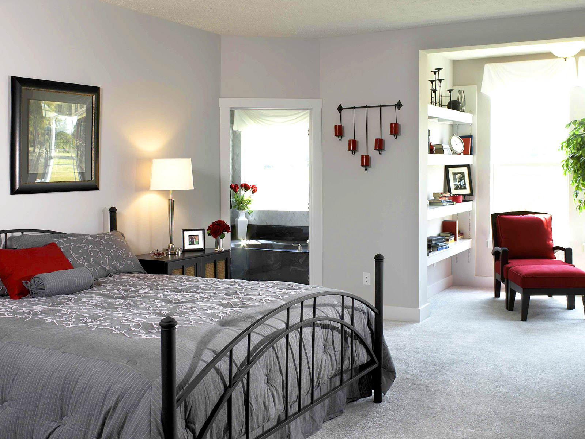
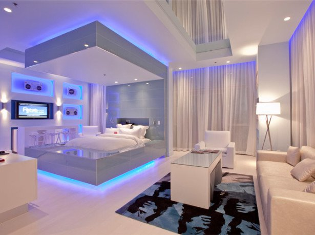
Copyright © 2017. All Right Reserved